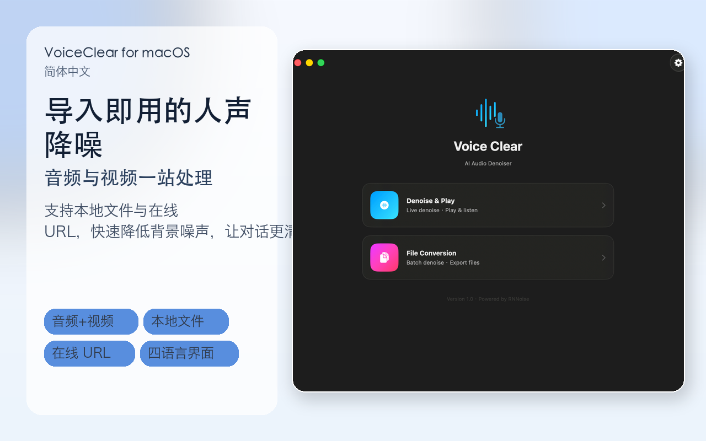
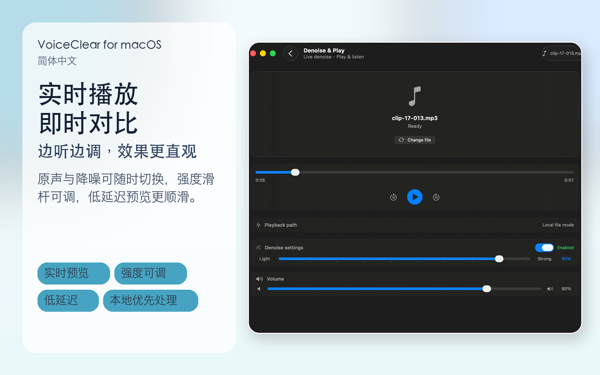
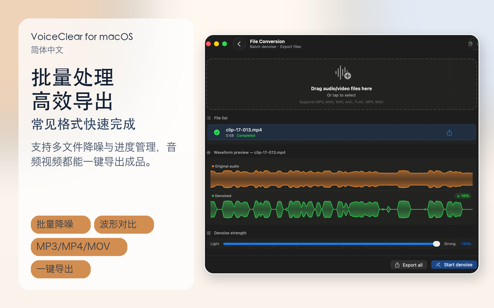

音频与视频双支持
不只音频，视频中的人声也可降噪处理，输出更清晰的听感。
支持音频与视频人声降噪，既可处理本地文件，也可粘贴在线 URL 实时播放对比。你可以先听原声，再听降噪效果，确认后再导出。
不只音频，视频中的人声也可降噪处理，输出更清晰的听感。
导入本机文件或粘贴 http/https 媒体链接，按场景灵活使用。
支持原声与降噪效果切换，确认提升后再导出，避免盲目处理。
从轻度优化到强力降噪，按不同录音环境调整到合适平衡点。
不上传文件到服务器，以设备本地处理为主，更适合注重隐私的内容。
支持简体中文、繁體中文、English、日本語，跨地区使用更自然。
mp3、m4a、wav、aac、aiff、flac
mp4、mov（保留视频轨，仅处理音轨）
音频导出 WAV；视频保持原容器，完成音轨降噪后封装输出。
支持 http/https 在线 URL，适合先试听再决定是否下载处理。



一键为音频和视频人声降噪，支持在线链接实时播放与本地文件处理，让对话更清晰、听感更舒适。
一鍵為音訊與影片人聲降噪，支援線上連結即時播放與本機檔案處理，讓對話更清楚、聽感更舒適。
Clean up voices in audio and video with one tap. Process local files or stream from URLs with adjustable denoise strength for clearer speech.
音声・動画の話し声をワンタップでノイズ低減。ローカルファイルにもURL再生にも対応し、聞き取りやすい音声へ整えます。